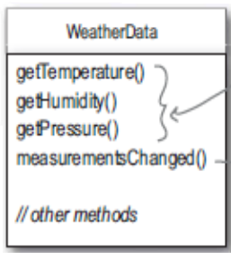

Tenemos que hacer una api una estación metereológica para que pueda ser extendida y que se puedan agregar otros elementos de visualización
API:(Application Programming Interface o Interfaz de programación de aplicaciones) es el conjunto de funciones y procedimientos (o métodos, en la programación orientada a objetos) que ofrece cierta biblioteca para ser utilizado por otro software como una capa de abstracción.
Tres son las partes que intervienen en la estación metereológica
El objetivo del programa es actualizar los displays cuando alla algún cambio en los datos sensados
El clase WhetherData viene con 3 metodos implementados que son los que obtienen los datos de la estación metereológica, estos son getTemperature(), getHumidity(), getPressure() y un método measurementsChanged() que es invocado cada vez que hay un cambio en la lectura de los sensores de la estación metereolígica
Nuestra tarea es implementar el método measurementsChanged() de tal manera que se actualicen los displays con las nuevas datos adequiridos
/
#